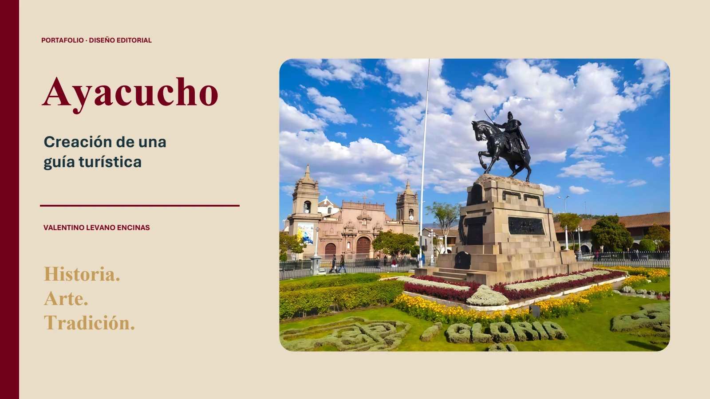
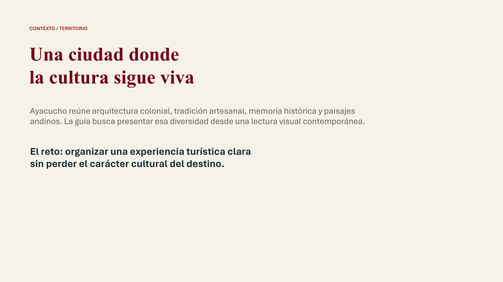
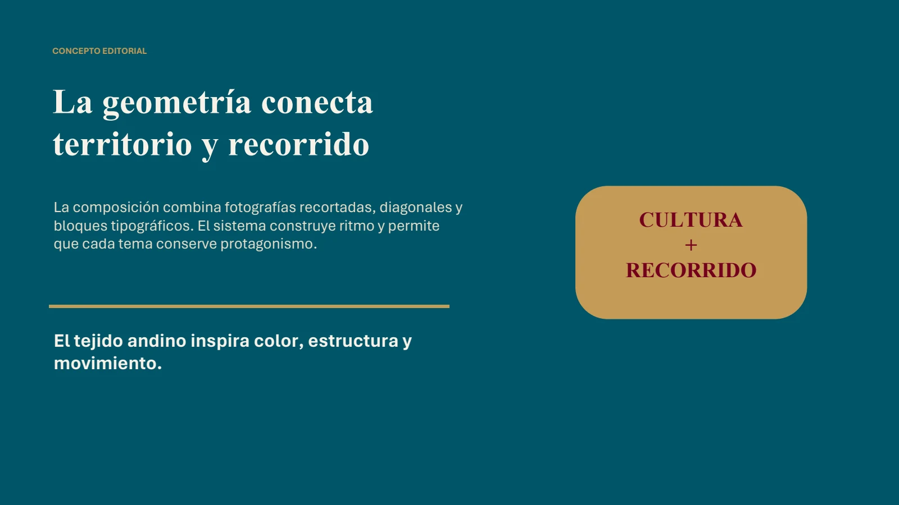
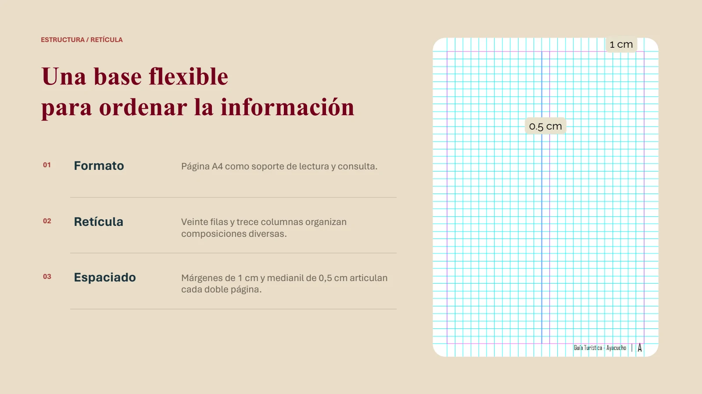
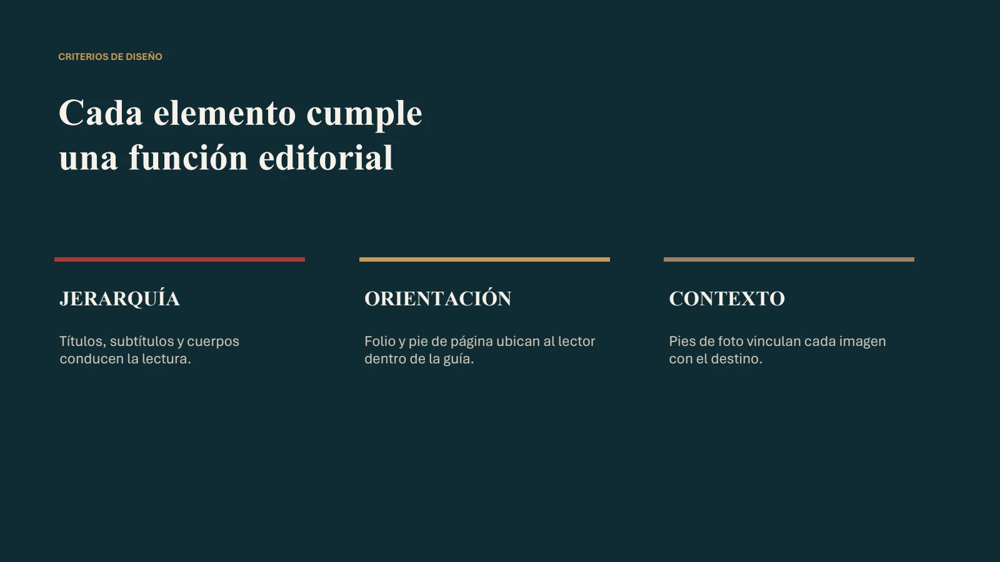
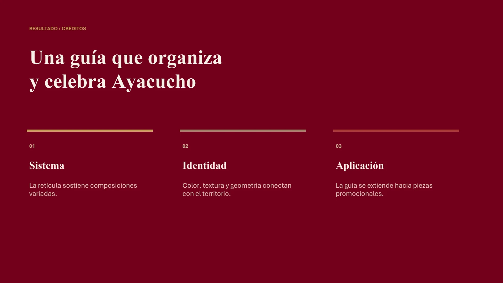

Formato
Página A4 como soporte de lectura y consulta.
Portafolio · Diseño editorial
Creación de una guía turística donde historia, arte y tradición construyen el recorrido.

Arrastra una esquina o usa las flechas para pasar página.
Abrir visor independiente ↗Contexto · Territorio
Ayacucho reúne arquitectura colonial, tradición artesanal, memoria histórica y paisajes andinos. La guía presenta esa diversidad desde una lectura visual contemporánea.
El reto: organizar una experiencia turística clara sin perder el carácter cultural del destino.


Concepto editorial
Fotografías recortadas, diagonales y bloques tipográficos construyen ritmo y permiten que cada tema conserve protagonismo.
Estructura · Retícula
Página A4 como soporte de lectura y consulta.
Veinte filas y trece columnas organizan composiciones diversas.
Márgenes de 1 cm y medianil de 0,5 cm articulan cada doble página.

Criterios de diseño

Identidad · Diagramación
La portada combina patrimonio, paisaje y tradición. Luego, el índice y las aperturas establecen tono y orientación; folclore, festividades, artesanía y recomendaciones conviven dentro de una misma familia visual.
Promoción · Mockups
El lenguaje editorial se adapta a un afiche de impacto y toma forma en visualizaciones del impreso abierto, la portada y la pieza promocional en contexto urbano.
Resultado · Síntesis
La retícula sostiene composiciones variadas.
Color, textura y geometría conectan con el territorio.
La guía se extiende hacia piezas promocionales.
